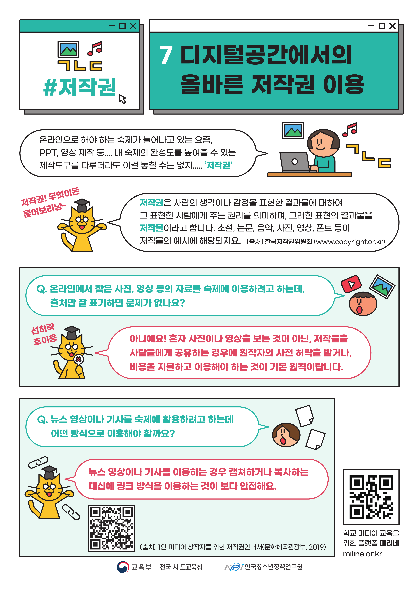

|
 |
 |
 |
 |
 |  |
|
03 저작권 위반? 저작권이 뭔데?(57p) - 정보사회 구성원으로서 개인정보와 저작권 보호의 중요성을 인식하고 개인정보 보호, 저작권 보호 방법을 실천한다. 게임형식으로 저작물을 유형을 이해하고 분류하할 수 있도록 학습 |
04 저작권, 이것만 알면 오케이!!!(84p) - CCL(creative common license): 저작권자가 저작물 사용 조건을 미리 제시해 사용자가 저작권자에게 따로 허락을 구하지 않고도 창작물을 사용할 수 있게 한 일종의 오픈 라이선스 CCL에 대해 이해하고 바르게 매칭할 수 있도록 함 |
06 함께 지켜요! 우리의 저작권!(105p)(4분 8초) 착각하기 쉬운 저작권을 퀴즈 형식으로 전달 |
알기 쉬운 지식재산권과 저작권(6분 48초) 저작권에 대한 인식 개선과 실천의지 제고 |
현이네는 저작권 가족(초등용) 엄마, 아빠, 그리고 오빠와 함께 사는 우리친구 현이. 현이네 가족은 ‘저작권 가족’ 이라는 별명이 붙어 있답니다. 왜 많고 많은 별명 중에 하필 ‘저작권 가족’ 일까요? 현이네 가족의 저작권 이야기. 어떤 이야기일지 이제 들어보자고요 (출처: 한국저작권위원회, https://www.copyright.or.kr) |
삼총사의 저작권 도장 수련기(중등용) 아무 생각 없이 다른 사람의 글, 게임, 콘텐츠들을 이용해 오던 장폭우, 박리, 그리고 나보아. 이 세 친구에게 ‘저작권 도장 수련’ 이라는 벌이 내려졌답니다. 듣기만 해도 특이한 도장인데 거기엔 더 요상한 사부님이라는 분이 계시네요 (출처: 한국저작권위원회, https://www.copyright.or.kr) |
디지털공간에서의 올바른 저작권 이용 디지털공간에서의 저작권에 대한 개념 이해, 학생들이 궁금해할 만한 내용을 Q&A와 요약 정리로 풀어냄으로써 저작권에 대한 깊이 있는 이해 |
06 함께 지켜요! 우리의 저작권!(105p) - CCL(creative common license): 저작권자가 저작물 사용 조건을 미리 제시해 사용자가 저작권자에게 따로허락을 구하지 않고도 창작물을 사용할 수 있게 한 일종의 오픈 라이선스 CCL에 대해 이해하고 바르게 매칭할 수 있도록 함 |